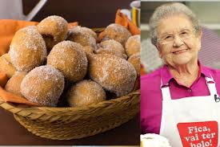

Bolinho de chuva

Ingredientes
- 2 ovos
- 1 xícara de açúcar
- 1 xícara (chá) de leite
- 2 e 1/2 xícaras de farinha de trigo
- 1 colher (sopa) de fermento em pó
- 3 colheres (sopa) de açúcar para polvilhar
- 1 colher (sopa) de canela para polvilhar
- 1 litro de óleo para fritar
Modo de preparo
- Misture todos os ingredientes até obter uma massa cremosa e homogênea.
- Deixe aquecer uma panela com bastante óleo para que os bolinhos possam boiar.
- Quando o óleo estiver bem quente (180º C), com uma colher, comece a colocar pequenas quantidades de massa, e frite até que dourem por inteiro.
- Coloque os bolinhos sobre papel absorvente e depois passe-os no açúcar com canela.